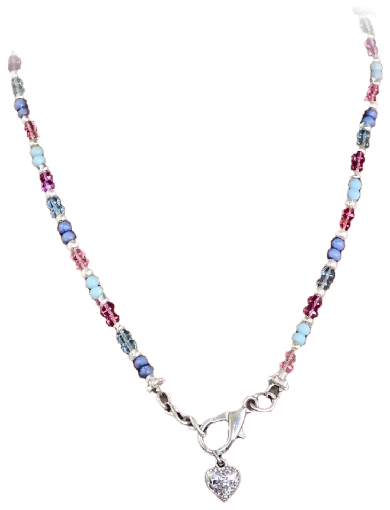
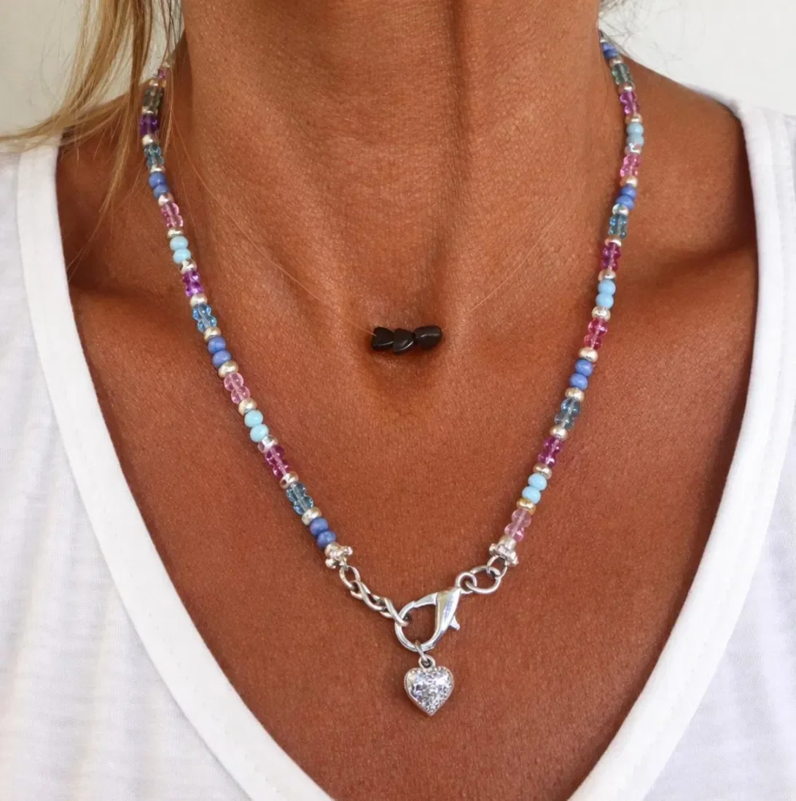
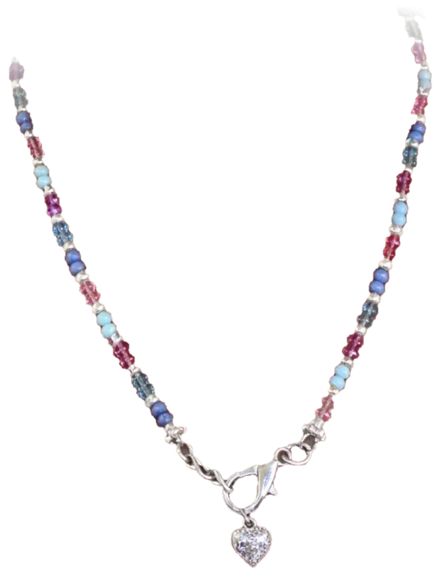

Una sola pieza.
- Cuentas de vidrio en celeste, lila y rosa
- Separadores plateados
- Mosquetón y dije de corazón

Accesorios con alma
Collares y accesorios unisex, para ella y para él. Piezas que no se repiten, armadas con impronta propia.
La pieza, de cerca
Catálogo
Cada una es única. Tocá una para verla de cerca y consultala por mensaje directo.
Unisex
Cadenas, cuentas, piedras y dijes que no entienden de géneros. Cada accesorio tiene su personalidad: lo elegís por cómo te queda, no por para quién “se supone” que es.
Ver cómo pedir

Hecho en Argentina
Quién está detrás
Detrás de Verónica Wolk estoy yo, Vero. Hago accesorios con alma: collares y piezas que diseño con impronta propia y mucho carácter.
No repito diseños. Cada pieza sale de combinar materiales, colores y formas hasta que tiene algo que decir. Por eso, cuando una pieza se va, no vuelve: la próxima va a ser otra historia.
Me vas a encontrar en ferias y visitas, y si estás lejos, te lo mando: hago envíos a todo el país.
“Accesorios con alma, para que te acompañen y digan algo de vos.”
Vero Wolk
Cuentas, cristales, cadenas, piedras y dijes. Todo empieza en la mesa de trabajo.
Combinaciones que no se repiten: cada pieza tiene su propia impronta.
Se arma pieza por pieza, cuidando cada cierre y cada detalle.
En ferias, visitas o con envío a cualquier punto del país.
Escribime por mensaje directo en Instagram con la pieza que te gustó (una captura alcanza) y te confirmo si está disponible.
Sí, envíos a todo el país. Te paso el costo según tu ubicación.
No. Cada pieza es única; si una se vende, la próxima va a ser distinta.
Sí, los accesorios son unisex. Si buscás algo para regalar, contame para quién es y te ayudo a elegir.
Los métodos de pago están en las historias destacadas de Instagram, o preguntame por mensaje directo.
En ferias y visitas. Las fechas las comparto en Instagram, en la historia destacada “Feria y Visitas”.
Pedidos y consultas
Escribime por mensaje directo en Instagram y lo charlamos.
Mandame un mensaje